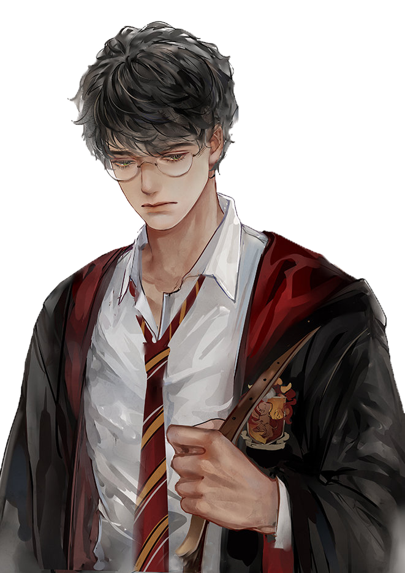
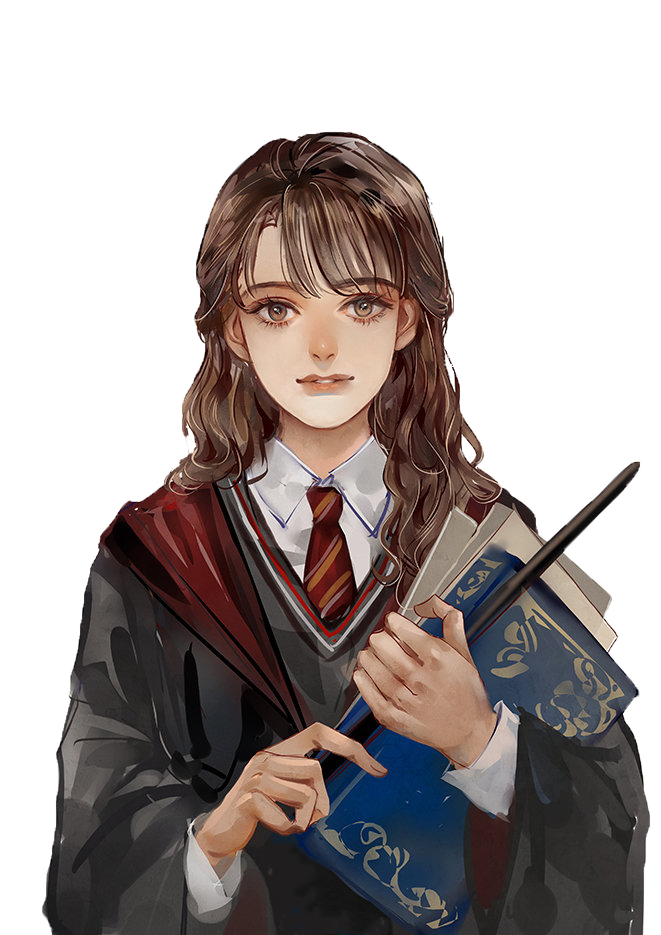
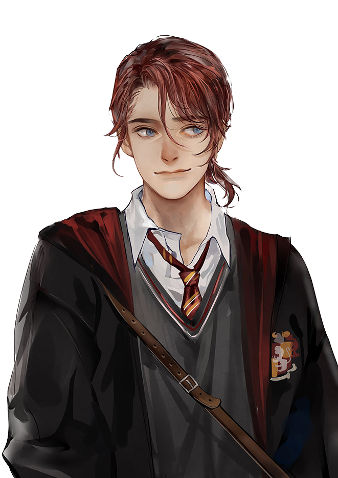
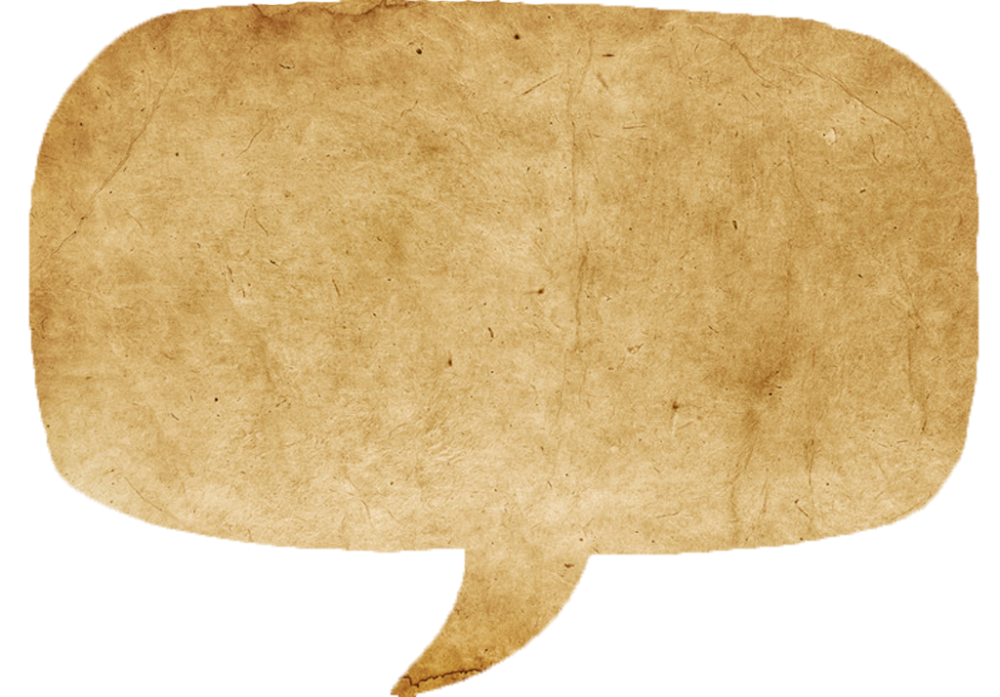

[一天晚上训练结束后，哈利回到格兰芬多公共休息室，浑身冻得发僵，但对训练的进展非常满意。他发现公共休息室里叽叽喳喳，热闹非凡。]
哈利：出什么事了？
[罗恩和赫敏坐在火炉旁两把最好的椅子上，正在完成天文课的两张星星图表。]
罗恩：第一次去霍格莫德过周末。十月底。万圣节前夕。
[哈利扑通坐在罗恩旁边的一把椅子上，满心的高兴劲儿一扫而光。赫敏似乎看透了他的心思。]
罗恩：布莱克又不是傻瓜，不可能跑到霍格莫德去轻举妄动。哈利，你问问麦格你这次能不能去，下次要等到猴年马月——
赫敏：罗恩！哈利应该待在学校里——
罗恩：不能就把他一个三年级学生留在学校，去问问麦格吧，哈利，快去——
哈利：好吧，我去问问。
[赫敏张嘴想反驳，就在这时，克鲁克山轻轻跳上她的膝头，嘴里叼着一只很大的死蜘蛛。]
罗恩：它非得当着我们的面吃那玩意儿吗？
赫敏：聪明的克鲁克山，这是你自己抓住的吗？
[克鲁克山慢慢地把蜘蛛嚼着吃了，一双黄眼睛傲慢地盯着罗恩。]
罗恩：就让它待在那儿别动。斑斑在我的书包里睡觉呢。
[哈利打了个哈欠。他真想上床睡觉，可是他的星星图表还没画完呢。他把书包拖过来，掏出羊皮纸、墨水和羽毛笔，开始做功课。]
罗恩：如果你愿意，可以抄我的。
[赫敏不赞成抄袭，她噘起了嘴，但什么也没说。克鲁克山仍然眼睛一眨不眨地盯着罗恩，毛茸茸的尾巴尖轻轻摆动着。突然，它忽地猛扑过去。]
罗恩：哎哟！滚开，你这个傻畜生！
[罗恩想把书包从克鲁克山身下拽开，可是克鲁克山抓住不放，一边龇牙咧嘴、狠命撕扯。]
赫敏：罗恩，别伤害它！
[整个公共休息室里的同学都在看着。罗恩抓着书包抡了一圈，克鲁克山仍然抓住不放，斑斑却从书包口里飞了出来——]
罗恩：抓住那只猫！
[这时克鲁克山丢下了书包，蹿到桌子那头，开始追赶惊慌失措的斑斑。]
[乔治·韦斯莱扑过去抓克鲁克山，没有抓住。斑斑一溜烟穿过二十双腿，一头钻到了一只旧五斗橱底下。克鲁克山刹住脚步，矮下罗圈腿，俯身把前爪伸到五斗橱底下拼命扒拉着。]
[罗恩和赫敏匆匆赶了过来。赫敏抓住克鲁克山的腰部，把它抱走了。罗恩趴在地上，费了不少劲儿，才揪着斑斑的尾巴把它拉了出来。]
罗恩：你看看它！瘦得皮包骨头！你让那只猫离它远点儿！
赫敏：克鲁克山不知道这样做不对！猫都喜欢追老鼠的，罗恩！
罗恩：那畜生有点儿怪！它听见了我说斑斑在我的书包里！
赫敏：哦，别胡扯啦，克鲁克山能闻到它的气味，罗恩，你以为——
罗恩：那只猫就是盯住斑斑不放！是斑斑先来的，而且它病了！
[罗恩气冲冲地大步穿过公共休息室，上楼去男生宿舍了。]
Back
Next